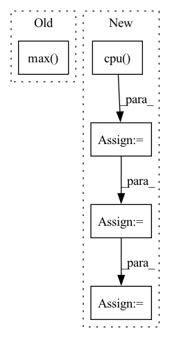

Pattern ID :4541

Before Change
ratio = estimated_sources_amplitude / estimated_sources_amplitude.sum(dim=0)
estimated_sources = ratio * mixture
norm = max(1, torch.abs(mixture).max() / 10)
mixture, estimated_sources = mixture / norm, estimated_sources / norm
estimated_sources = update_em(mixture, estimated_sources, iterations, eps=eps)
estimated_sources = norm * estimated_sources
After Change
dtype = mixture.dtype
mixture = mixture.detach().cpu().numpy()
estimated_amplitude = estimated_amplitude.detach().cpu().numpy()
mixture = mixture.transpose(2, 1, 0)
estimated_amplitude = estimated_amplitude.transpose(3, 2, 1, 0)
estimated_sources = norbert.wiener(estimated_amplitude, mixture, eps=eps)
estimated_sources = estimated_sources.transpose(3, 2, 1, 0)
estimated_sources = torch.from_numpy(estimated_sources).to(device, dtype)
return estimated_sources
In pattern: SUPERPATTERN
Frequency: 3
Non-data size: 5
Instances
Fragment ID: 16486203
Project Name: tky823/dnn-based_source_separation
Commit Name: 11a2e82888f76547df72eff58c6a592e3473e65c
Time: 2021-08-20
Author: 40362510+tky823@users.noreply.github.com
File Name: egs/musdb18/d3net/src/adhoc_driver.py
M Class Name: AnonimousClass
N Class Name: AnonimousClass
M Method Name: apply_multichannel_wiener_filter(4)
N Method Name: apply_multichannel_wiener_filter(5)
M Parent Class:
N Parent Class:
M File Name: egs/musdb18/d3net/src/adhoc_driver.py
N File Name: egs/musdb18/d3net/src/adhoc_driver.py
M Start Line: 383
M End Line: 401
N Start Line: 397
N End Line: 413
'>
Before Change
heatmap: torch.FloatTensor = (feats * weights).sum(dim=1).clamp(0) // (N,H,W)
heatmap = heatmap.view(-1, _input.shape[-2], _input.shape[-1]) // (N,H,W)
heatmap.sub_(heatmap.flatten(start_dim=1).min())
heatmap.div_(heatmap.flatten(start_dim=1).max())
return heatmap
After Change
weights: torch.FloatTensor = grad.mean(axis=-1, keepdim=True).mean(axis=-1, keepdim=True) // (N,C,1,1)
heatmap: torch.FloatTensor = (feats * weights).sum(dim=1).clamp(0) // (N,H,W)
heatmap = np.array(heatmap.cpu())
heatmap = cv2.resize(heatmap[0], _input.shape[2:])
heatmap = heatmap - np.min(heatmap)
heatmap = heatmap / np.max(heatmap)
return heatmap
'>
Fragment ID: 16486232
Project Name: ain-soph/trojanzoo
Commit Name: 0f8d0e05888b69956b12e4367b28cc62ba6a6981
Time: 2020-11-20
Author: corazju@zju.edu.cn
File Name: trojanzoo/model/imagemodel.py
M Class Name: ImageModel
N Class Name: ImageModel
M Method Name: grad_cam(3)
N Method Name: grad_cam(3)
M Parent Class: Model
N Parent Class: Model
M File Name: trojanzoo/model/imagemodel.py
N File Name: trojanzoo/model/imagemodel.py
M Start Line: 187
M End Line: 200
N Start Line: 206
N End Line: 222
'>
Before Change
condition1 = other_idx.sum(dim=-1, keepdim=True) // (C, 1)
other_idx = torch.where(condition1, other_idx, other_idx1) // (C, batch_size)
min_values, min_idx = torch.where(other_idx, values, values.max()).min(dim=-1)[0] // (C)
min_labels = labels.gather(dim=1, index=min_idx.unsqueeze(1)).flatten() // (C)
min_labels_counts = labels.eq(min_labels.unsqueeze(1)).int().sum(dim=1) // (C)
condition2 = min_labels.ge(self.n_samples - 2) // todo: Not sure: self.n_samples -> self.seed_num
After Change
def find_min_max(self, all_ps: Dict[str, torch.Tensor], _label: torch.Tensor) -> Dict[str, Dict[int, float]]:
neuron_dict: Dict[str, Dict[int, float]] = {}
_label = _label.cpu()
for layer in all_ps.keys():
ps = all_ps[layer] // (C, n_samples, batch_size, num_classes)
vs: torch.Tensor = ps[:, self.n_samples // 5:].max(dim=1)[0] \
- ps[:, :self.n_samples // 5].min(dim=1)[0] // (C, batch_size, num_classes)
values, labels = vs.sort(dim=-1, descending=True)
condition1 = labels[:, :, 0].eq(_label) // exclude the ground-truth labels
values = torch.where(condition1, values[:, :, 1] - values[:, :, 2],
values[:, :, 0] - values[:, :, 1]) // (C, batch_size)
labels = torch.where(condition1, labels[:, :, 1], labels[:, :, 0]) // (C, batch_size)
mode_labels = labels.mode(keepdim=True)[0] // (C, 1) The most frequent label
mode_idx = labels.eq(mode_labels) // (C, batch_size)
mode_labels_counts = mode_idx.sum(dim=-1) // (C)
condition2 = mode_labels_counts.ge(self.seed_num * 0.75)
idx_list = condition2.nonzero().flatten().tolist()
idx_list = sorted(idx_list, key=lambda idx: float(values[idx][mode_idx[idx]].min()))[:self.top_n_neurons]
neuron_dict[layer] = {int(idx): int(mode_labels[idx]) for idx in idx_list}
prints("{green}{layer:<20}: {reset}".format(layer=layer, **ansi), indent=4)
'>
Fragment ID: 16486211
Project Name: ain-soph/trojanzoo
Commit Name: 1684c28ef38502abb83d37beb845b69007e33274
Time: 2020-07-07
Author: ain-soph@live.com
File Name: trojanzoo/defense/backdoor/abs.py
M Class Name: ABS
N Class Name: ABS
M Method Name: find_min_max(3)
N Method Name: find_min_max(3)
M Parent Class: Defense_Backdoor
N Parent Class: Defense_Backdoor
M File Name: trojanzoo/defense/backdoor/abs.py
N File Name: trojanzoo/defense/backdoor/abs.py
M Start Line: 210
M End Line: 225
N Start Line: 234
N End Line: 254